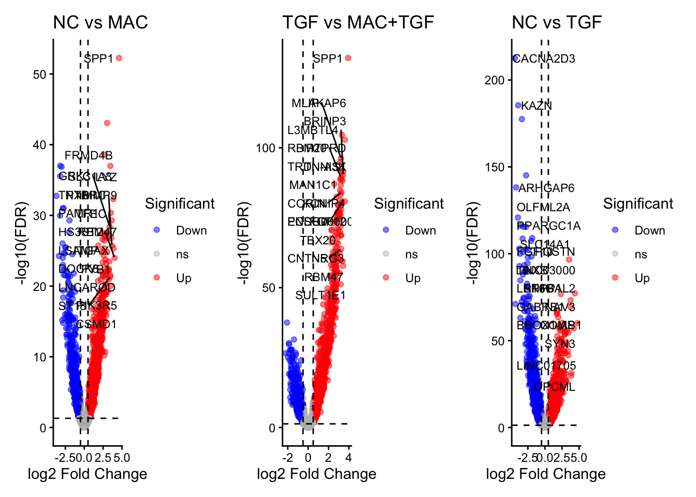
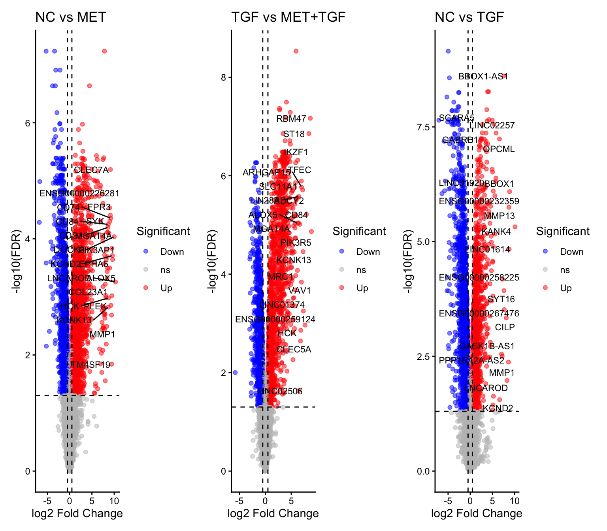

Last updated: 2026-07-10
Checks: 7 0
Knit directory: MT_Project/
This reproducible R Markdown analysis was created with workflowr (version 1.7.2). The Checks tab describes the reproducibility checks that were applied when the results were created. The Past versions tab lists the development history.
Great! Since the R Markdown file has been committed to the Git repository, you know the exact version of the code that produced these results.
Great job! The global environment was empty. Objects defined in the global environment can affect the analysis in your R Markdown file in unknown ways. For reproduciblity it’s best to always run the code in an empty environment.
The command set.seed(20260612) was run prior to running
the code in the R Markdown file. Setting a seed ensures that any results
that rely on randomness, e.g. subsampling or permutations, are
reproducible.
Great job! Recording the operating system, R version, and package versions is critical for reproducibility.
Nice! There were no cached chunks for this analysis, so you can be confident that you successfully produced the results during this run.
Great job! Using relative paths to the files within your workflowr project makes it easier to run your code on other machines.
Great! You are using Git for version control. Tracking code development and connecting the code version to the results is critical for reproducibility.
The results in this page were generated with repository version 32a9723. See the Past versions tab to see a history of the changes made to the R Markdown and HTML files.
Note that you need to be careful to ensure that all relevant files for
the analysis have been committed to Git prior to generating the results
(you can use wflow_publish or
wflow_git_commit). workflowr only checks the R Markdown
file, but you know if there are other scripts or data files that it
depends on. Below is the status of the Git repository when the results
were generated:
Ignored files:
Ignored: .DS_Store
Ignored: .Rproj.user/
Ignored: analysis/.DS_Store
Note that any generated files, e.g. HTML, png, CSS, etc., are not included in this status report because it is ok for generated content to have uncommitted changes.
These are the previous versions of the repository in which changes were
made to the R Markdown
(analysis/DGEA_Method_comparison.Rmd) and HTML
(docs/DGEA_Method_comparison.html) files. If you’ve
configured a remote Git repository (see ?wflow_git_remote),
click on the hyperlinks in the table below to view the files as they
were in that past version.
| File | Version | Author | Date | Message |
|---|---|---|---|---|
| Rmd | 32a9723 | Sophie.Alice | 2026-07-10 | Update viewing of tables |
rm(list=ls())
gc() used (Mb) gc trigger (Mb) limit (Mb) max used (Mb)
Ncells 859445 45.9 1336727 71.4 NA 1336727 71.4
Vcells 1536903 11.8 8388608 64.0 16384 2386128 18.3library(readr)
library(dplyr)
library(ggplot2)
library(Seurat)
library(hdf5r)
library(scCustomize)
library(patchwork)
library(cowplot)
library(ggrepel)
library(workflowr)
library(scDblFinder)
library(clustree)
library(harmony)
library(speckle)
library(MAST)
library(tibble)
library(EnhancedVolcano)
library(ggarchery)
library(ggtangle)
library(clusterProfiler)
library(org.Hs.eg.db)
library(GO.db)
library(DOSE)
library(fgsea)
library(forcats)
library(SCpubr)
library(assertthat)
library(UCell)
library(DT)
library(ggforce)
library(enrichplot)
library(ggrain)
library(edgeR)
library(limma)path <- "/Users/sophiewagner/Desktop/USZ 25:26/Gabi_Project_Setup/Laila_MT_Project/Laila_MT_Project/RDS_Files/Post_Annotation.rds"
Data <- read_rds(path)
DataAn object of class Seurat
65557 features across 13386 samples within 2 assays
Active assay: RNA (38606 features, 0 variable features)
2 layers present: counts, data
1 other assay present: SCT
3 dimensional reductions calculated: pca, harmony, umapFibroblasts <- subset(Data, cell_type == "Cardiac Fibroblasts")
Idents(Fibroblasts) <- "orig.ident"
custom_palette <- colorRampPalette(c("#005EA8", "#6DB335", "#FFD966", "#EDAAD2", "#9F1C67"))
gradient_colors3 <- custom_palette(6)
gradient_colors4 <- custom_palette(4)SOPHIE CHANGES:
Changing Variable names
metformin_cellranger <- Data
metformin_cellranger$Sample <- metformin_cellranger$orig.ident
metformin_cellranger$condition <- metformin_cellranger$orig.ident
table(metformin_cellranger$condition)
CMF_NC CMF_TGF CMFHM_NC CMFHM_TGF
2389 3388 4316 3293 metformin_cellranger$condition <- dplyr::recode(metformin_cellranger$condition,
"CMF_NC" = "NC",
"CMFHM_NC" = "MET",
"CMF_TGF" = "TGF",
"CMFHM_TGF" = "MET_TGF")Cellranger:
Fibro_cellranger <- subset(metformin_cellranger, cell_type == "Cardiac Fibroblasts")
Idents(Fibro_cellranger) <- Fibro_cellranger$conditioncounts_fibro_cellranger <- GetAssayData(Fibro_cellranger, assay = "SCT", layer = "data")
# podział na grupy
cells_group1_fibro_cellranger <- WhichCells(Fibro_cellranger, idents = "NC")
cells_group2_fibro_cellranger <- WhichCells(Fibro_cellranger, idents = "MET")
cells_group3_fibro_cellranger <- WhichCells(Fibro_cellranger, idents = "TGF")
cells_group4_fibro_cellranger <- WhichCells(Fibro_cellranger, idents = "MET_TGF")
# procent ekspresji w każdej grupie
pct_group1_fibro_cellranger <- rowSums(counts_fibro_cellranger[, cells_group1_fibro_cellranger] > 0) / length(cells_group1_fibro_cellranger)
pct_group2_fibro_cellranger <- rowSums(counts_fibro_cellranger[, cells_group2_fibro_cellranger] > 0) / length(cells_group2_fibro_cellranger)
pct_group3_fibro_cellranger <- rowSums(counts_fibro_cellranger[, cells_group3_fibro_cellranger] > 0) / length(cells_group3_fibro_cellranger)
pct_group4_fibro_cellranger <- rowSums(counts_fibro_cellranger[, cells_group4_fibro_cellranger] > 0) / length(cells_group4_fibro_cellranger)
# filtr: ≥5% w jednej lub drugiej grupie
# Porównanie NC vs MET
genes_to_test_1_fibro_cellranger <- names(pct_group1_fibro_cellranger)[(pct_group1_fibro_cellranger >= 0.1) | (pct_group2_fibro_cellranger >= 0.1)]
# Porównanie TGF vs MET+TGF
genes_to_test_2_fibro_cellranger <- names(pct_group2_fibro_cellranger)[(pct_group2_fibro_cellranger >= 0.1) | (pct_group4_fibro_cellranger >= 0.1)]
# Porównanie NC vs TGF
genes_to_test_3_fibro_cellranger <- names(pct_group1_fibro_cellranger)[(pct_group1_fibro_cellranger >= 0.1) | (pct_group3_fibro_cellranger >= 0.1)]# ----------------------------
# 1. Przygotowanie danych
# ----------------------------
# Załóżmy, że masz counts_matrix (raw counts) fibroblastów
# i metadata z kolumną 'condition' (np. NC, MET, TGF, MET_TGF)
counts_fibro_disp_cellranger <- as.matrix(GetAssayData(Fibro_cellranger, assay = "RNA", layer = "counts"))
# wektor grup (musisz mieć dokładnie tyle elementów, ile kolumn w counts)
group_fibro_cellranger <- factor(Fibro_cellranger$condition)
# stwórz DGEList
dge_fibro_cellranger <- DGEList(counts = counts_fibro_disp_cellranger, group = group_fibro_cellranger)
# projekt modelu
design_fibro_cellranger <- model.matrix(~0 + group_fibro_cellranger)
colnames(design_fibro_cellranger) <- levels(group_fibro_cellranger)
contrast_met_nc_fibro_cellranger <- makeContrasts(NC_vs_MET = MET - NC, levels = design_fibro_cellranger)
contrast_met_tgf_fibro_cellranger <- makeContrasts(TGF_vs_MET_TGF = `MET_TGF` - TGF, levels = design_fibro_cellranger)
contrast_tgf_nc_fibro_cellranger <- makeContrasts(NC_vs_TGF = TGF - NC, levels = design_fibro_cellranger)
# MET vs NC
dge_met_nc_fibro_cellranger <- dge_fibro_cellranger[rownames(dge_fibro_cellranger) %in% genes_to_test_1_fibro_cellranger, , keep.lib.sizes = FALSE]
dge_met_nc_fibro_cellranger <- estimateDisp(dge_met_nc_fibro_cellranger, design_fibro_cellranger)
fit_met_nc_fibro_cellranger <- glmQLFit(dge_met_nc_fibro_cellranger, design_fibro_cellranger)
qlf_met_nc_fibro_cellranger <- glmQLFTest(fit_met_nc_fibro_cellranger, contrast = contrast_met_nc_fibro_cellranger)
# MET_TGF vs TGF
dge_met_tgf_fibro_cellranger <- dge_fibro_cellranger[rownames(dge_fibro_cellranger) %in% genes_to_test_2_fibro_cellranger, , keep.lib.sizes = FALSE]
dge_met_tgf_fibro_cellranger <- estimateDisp(dge_met_tgf_fibro_cellranger, design_fibro_cellranger)
fit_met_tgf_fibro_cellranger <- glmQLFit(dge_met_tgf_fibro_cellranger, design_fibro_cellranger)
qlf_met_tgf_fibro_cellranger <- glmQLFTest(fit_met_tgf_fibro_cellranger, contrast = contrast_met_tgf_fibro_cellranger)
# TGF vs NC
dge_tgf_nc_fibro_cellranger <- dge_fibro_cellranger[rownames(dge_fibro_cellranger) %in% genes_to_test_3_fibro_cellranger, , keep.lib.sizes = FALSE]
dge_tgf_nc_fibro_cellranger <- estimateDisp(dge_tgf_nc_fibro_cellranger, design_fibro_cellranger)
fit_tgf_nc_fibro_cellranger <- glmQLFit(dge_tgf_nc_fibro_cellranger, design_fibro_cellranger)
qlf_tgf_nc_fibro_cellranger <- glmQLFTest(fit_tgf_nc_fibro_cellranger, contrast = contrast_tgf_nc_fibro_cellranger)glmLRT function output to simple dataframes for each
experiment:deg_met_nc_fibro_cellranger_method1 <- topTags(
qlf_met_nc_fibro_cellranger,
n = Inf
)$table %>%
mutate(
gene = rownames(.),
avg_log2FC = logFC,
t_like = sign(logFC) * sqrt(F)
)
deg_met_tgf_fibro_cellranger_method1 <- topTags(
qlf_met_tgf_fibro_cellranger,
n = Inf
)$table %>%
mutate(
gene = rownames(.),
avg_log2FC = logFC,
t_like = sign(logFC) * sqrt(F)
)
deg_tgf_nc_fibro_cellranger_method1 <- topTags(
qlf_tgf_nc_fibro_cellranger,
n = Inf
)$table %>%
mutate(
gene = rownames(.),
avg_log2FC = logFC,
t_like = sign(logFC) * sqrt(F)
)# ----------------------------
# 4. Volcano plot
# ----------------------------
volcano_plot <- function(df, title, logfc_cut = 0.5, fdr_cut = 0.05, top_n = 20) {
df <- df %>%
mutate(Significant = ifelse(FDR < fdr_cut & abs(avg_log2FC) > logfc_cut,
ifelse(avg_log2FC > 0, "Up", "Down"), "ns"))
top_genes <- df %>%
filter(Significant != "ns") %>%
arrange(desc(abs(avg_log2FC))) %>%
slice_head(n = top_n)
ggplot(df, aes(x = avg_log2FC, y = -log10(FDR), customdata = gene)) +
geom_point(aes(color = Significant), alpha = 0.5) +
scale_color_manual(values = c("Up" = "red", "Down" = "blue", "ns" = "grey")) +
geom_hline(yintercept = -log10(fdr_cut), linetype = "dashed", color = "black") +
geom_vline(xintercept = c(-logfc_cut, logfc_cut), linetype = "dashed", color = "black") +
geom_text_repel(data = top_genes, aes(label = gene), size = 3, max.overlaps = 20) +
theme_classic() +
labs(title = title, x = "log2 Fold Change", y = "-log10(FDR)")
}# Wyświetlenie
p1_fibro_cellranger <- volcano_plot(deg_met_nc_fibro_cellranger_method1, "NC vs MAC")
p2_fibro_cellranger <- volcano_plot(deg_met_tgf_fibro_cellranger_method1, "TGF vs MAC+TGF")
p3_fibro_cellranger <- volcano_plot(deg_tgf_nc_fibro_cellranger_method1, "NC vs TGF")
library(patchwork)
p1_fibro_cellranger | p2_fibro_cellranger | p3_fibro_cellranger
fibroblast_deg_list <- list()
fibroblast_deg_list[["NC vs MAC"]] <- deg_met_nc_fibro_cellranger_method1
fibroblast_deg_list[["TGF vs MAC+TGF"]] <- deg_met_tgf_fibro_cellranger_method1
fibroblast_deg_list[["NC vs TGF"]] <- deg_tgf_nc_fibro_cellranger_method1
outputdir <- "/Users/sophiewagner/Desktop/USZ 25:26/Gabi_Project_Setup/Laila_MT_Project/Laila_MT_Project/RDS_Files"
saveRDS(fibroblast_deg_list, file = file.path(outputdir, "Fibro_DEG_Lists_method1.rds"))3.4.0.0.0.0.0.0.0.0.0.0.0.0.0.0.0.0.0.0.0.0.0.0.0.0.0.0.0.0.0.0.0.0.0.0.0.0.0.0.0.0.0.0.0.0.0.0.0.0.0.0.0.0.0.0.0.0.0.0.0.0.0.0.1 Method 2 exact same code
Cellranger:
metformin_cellranger <- Data
metformin_cellranger$Sample <- metformin_cellranger$orig.ident
metformin_cellranger$condition <- metformin_cellranger$Sample
metformin_cellranger$condition <- dplyr::recode(metformin_cellranger$condition,
"CMF_NC" = "NC",
"CMFHM_NC" = "MET",
"CMF_TGF" = "TGF",
"CMFHM_TGF" = "MET_TGF")
# Check
table(metformin_cellranger$Sample, metformin_cellranger$condition)
MET MET_TGF NC TGF
CMF_NC 0 0 2389 0
CMF_TGF 0 0 0 3388
CMFHM_NC 4316 0 0 0
CMFHM_TGF 0 3293 0 0Fibro_cellranger <- subset(metformin_cellranger, cell_type == "Cardiac Fibroblasts")Cellranger:
Idents(Fibro_cellranger) <- Fibro_cellranger$condition
set.seed(123)
Fibro_cellranger_pseudo <- Fibro_cellranger
Fibro_cellranger_pseudo@meta.data <- Fibro_cellranger_pseudo@meta.data %>%
group_by(condition) %>%
dplyr::mutate(pseudo_rep = sample(c("rep1", "rep2", "rep3"), dplyr::n(), replace = TRUE)) %>%
ungroup()
# 2. Stworzenie nowej kolumny grupującej
Fibro_cellranger_pseudo$pseudobulk_id <- paste(Fibro_cellranger_pseudo$condition, Fibro_cellranger_pseudo$pseudo_rep, sep = "_")
# 1. Pobierz surowe zliczenia (raw counts)
counts_mat <- GetAssayData(Fibro_cellranger_pseudo, assay = "RNA", layer = "counts")
# 2. Pobierz informację o przypisaniu komórek do pseudo-replikatów
groups <- Fibro_cellranger_pseudo$pseudobulk_id
# 3. Agregacja (suma) przy użyciu wydajnej macierzy modelowej
# Tworzymy macierz binarną (komórka x pseudo_rep)
mm <- model.matrix(~ 0 + groups)
colnames(mm) <- levels(as.factor(groups))
# Mnożenie macierzy: zliczenia * macierz grup = sumy na grupę
# To jest matematyczny odpowiednik AggregateExpression
pb_counts_fibro_cellranger_pseudo <- counts_mat %*% mm
# 4. Naprawa nazw kolumn (usuwamy przedrostek "groups")
colnames(pb_counts_fibro_cellranger_pseudo) <- gsub("groups", "", colnames(pb_counts_fibro_cellranger_pseudo))
# Zamień na zwykłą macierz, jeśli edgeR tego wymaga
pb_counts_fibro_cellranger_pseudo <- as.matrix(pb_counts_fibro_cellranger_pseudo)
# Sprawdź podgląd
head(pb_counts_fibro_cellranger_pseudo) MET_rep1 MET_rep2 MET_rep3 MET_TGF_rep1 MET_TGF_rep2
DDX11L2 0 0 0 0 0
MIR1302-2HG 0 0 0 0 0
FAM138A 0 0 0 0 0
ENSG00000290826 0 0 0 0 0
OR4F5 0 0 0 0 0
ENSG00000238009 1 0 0 1 0
MET_TGF_rep3 NC_rep1 NC_rep2 NC_rep3 TGF_rep1 TGF_rep2 TGF_rep3
DDX11L2 0 0 0 0 0 0 0
MIR1302-2HG 0 0 0 0 0 0 0
FAM138A 0 0 0 0 0 0 0
ENSG00000290826 0 0 0 0 0 0 0
OR4F5 0 0 0 0 1 0 0
ENSG00000238009 0 2 0 0 0 1 2# Przygotowanie metadanych dla nowej macierzy
pb_meta_fibro_cellranger_pseudo <- data.frame(
sample_id = colnames(pb_counts_fibro_cellranger_pseudo)
) %>%
mutate(condition = gsub("_rep.*", "", sample_id)) # Wyciąga NC, TGF, TNF# Teraz możesz stworzyć DGEList dla edgeR
library(edgeR)
dge_pb_fibro_cellranger <- DGEList(counts = pb_counts_fibro_cellranger_pseudo, group = pb_meta_fibro_cellranger_pseudo$condition)# Filtrowanie genów o niskiej ekspresji (bardzo ważne!)
# Funkcja filterByExpr automatycznie bierze pod uwagę wielkość grup
keep_fibro_cellranger <- filterByExpr(dge_pb_fibro_cellranger)
dge_pb_fibro_cellranger <- dge_pb_fibro_cellranger[keep_fibro_cellranger, , keep.lib.sizes = FALSE]
# Obliczanie czynników normalizacyjnych (TMM)
dge_pb_fibro_cellranger <- calcNormFactors(dge_pb_fibro_cellranger)calcNormFactors has been renamed to normLibSizes# Tworzymy design matrix
design_pb_fibro_cellranger <- model.matrix(~ 0 + condition, data = pb_meta_fibro_cellranger_pseudo)
colnames(design_pb_fibro_cellranger) <- levels(as.factor(pb_meta_fibro_cellranger_pseudo$condition))
# Estymacja dyspersji (teraz zadziała, bo masz n=3 na grupę!)
dge_pb_fibro_cellranger <- estimateDisp(dge_pb_fibro_cellranger, design_pb_fibro_cellranger)
# Dopasowanie modelu QLF (Quasi-Likelihood - najbardziej rygorystyczny i polECSub1any dla pseudobulk)
fit_pb_fibro_cellranger <- glmQLFit(dge_pb_fibro_cellranger, design_pb_fibro_cellranger)colnames(design_pb_fibro_cellranger)[1] "MET" "MET_TGF" "NC" "TGF" # Definicja kontrastów
contrasts_pb_fibro_cellranger <- makeContrasts(
NC_vs_TGF = TGF - NC,
TGF_vs_MET_TGF = MET_TGF - TGF,
NC_vs_MET = MET - NC,
levels = design_pb_fibro_cellranger
)
# --- 1. TGF vs NC ---
qlf_TGF_NC_fibro_cellranger <- glmQLFTest(fit_pb_fibro_cellranger, contrast = contrasts_pb_fibro_cellranger[,"NC_vs_TGF"])
dge_TGF_NC_fibro_cellranger <- topTags(qlf_TGF_NC_fibro_cellranger, n = Inf)$table %>%
mutate(gene = rownames(.), avg_log2FC = logFC)
# --- 2. MET_TGF vs TGF ---
qlf_MET_TGF_TGF_fibro_cellranger <- glmQLFTest(fit_pb_fibro_cellranger, contrast = contrasts_pb_fibro_cellranger[,"TGF_vs_MET_TGF"])
dge_MET_TGF_TGF_fibro_cellranger <- topTags(qlf_MET_TGF_TGF_fibro_cellranger, n = Inf)$table %>%
mutate(gene = rownames(.), avg_log2FC = logFC)
# --- 3. MET vs NC ---
qlf_MET_NC_fibro_cellranger <- glmQLFTest(fit_pb_fibro_cellranger, contrast = contrasts_pb_fibro_cellranger[,"NC_vs_MET"])
dge_MET_NC_fibro_cellranger <- topTags(qlf_MET_NC_fibro_cellranger, n = Inf)$table %>%
mutate(gene = rownames(.), avg_log2FC = logFC)# Dla Fibro
dge_MET_NC_fibro_cellranger$t_like <- sign(dge_MET_NC_fibro_cellranger$logFC) * sqrt(qlf_MET_NC_fibro_cellranger$table$F)
dge_MET_NC_fibro_cellranger$z_score <-
zscoreT(
dge_MET_NC_fibro_cellranger$t_like,
df = qlf_MET_NC_fibro_cellranger$df.total
)
dge_MET_TGF_TGF_fibro_cellranger$t_like <- sign(dge_MET_TGF_TGF_fibro_cellranger$logFC) * sqrt(qlf_MET_TGF_TGF_fibro_cellranger$table$F)
dge_MET_TGF_TGF_fibro_cellranger$z_score <-
zscoreT(
dge_MET_TGF_TGF_fibro_cellranger$t_like,
df = qlf_MET_TGF_TGF_fibro_cellranger$df.total
)
dge_TGF_NC_fibro_cellranger$t_like <- sign(dge_TGF_NC_fibro_cellranger$logFC) * sqrt(qlf_TGF_NC_fibro_cellranger$table$F)
dge_TGF_NC_fibro_cellranger$z_score <-
zscoreT(
dge_TGF_NC_fibro_cellranger$t_like,
df = qlf_TGF_NC_fibro_cellranger$df.total
)# ----------------------------
# 4. Volcano plot
# ----------------------------
volcano_plot <- function(df, title, logfc_cut = 0.5, fdr_cut = 0.05, top_n = 20) {
df <- df %>%
mutate(Significant = ifelse(FDR < fdr_cut & abs(avg_log2FC) > logfc_cut,
ifelse(avg_log2FC > 0, "Up", "Down"), "ns"))
top_genes <- df %>%
filter(Significant != "ns") %>%
arrange(desc(abs(avg_log2FC))) %>%
slice_head(n = top_n)
ggplot(df, aes(x = avg_log2FC, y = -log10(FDR), customdata = gene)) +
geom_point(aes(color = Significant), alpha = 0.5) +
scale_color_manual(values = c("Up" = "red", "Down" = "blue", "ns" = "grey")) +
geom_hline(yintercept = -log10(fdr_cut), linetype = "dashed", color = "black") +
geom_vline(xintercept = c(-logfc_cut, logfc_cut), linetype = "dashed", color = "black") +
geom_text_repel(data = top_genes, aes(label = gene), size = 3, max.overlaps = 20) +
theme_classic() +
labs(title = title, x = "log2 Fold Change", y = "-log10(FDR)")
}# Wyświetlenie
p1_fibro_cellranger <- volcano_plot(dge_MET_NC_fibro_cellranger, "NC vs MET")
p2_fibro_cellranger <- volcano_plot(dge_MET_TGF_TGF_fibro_cellranger, "TGF vs MET+TGF")
p3_fibro_cellranger <- volcano_plot(dge_TGF_NC_fibro_cellranger, "NC vs TGF")
library(patchwork)
#p1 |
p1_fibro_cellranger | p2_fibro_cellranger | p3_fibro_cellranger
fibroblast_deg_list <- list()
fibroblast_deg_list[["NC vs MAC"]] <- dge_MET_NC_fibro_cellranger
fibroblast_deg_list[["TGF vs MAC+TGF"]] <- dge_MET_TGF_TGF_fibro_cellranger
fibroblast_deg_list[["NC vs TGF"]] <- dge_TGF_NC_fibro_cellranger
outputdir <- "/Users/sophiewagner/Desktop/USZ 25:26/Gabi_Project_Setup/Laila_MT_Project/Laila_MT_Project/RDS_Files"
saveRDS(fibroblast_deg_list, file = file.path(outputdir, "Fibro_DEG_Lists_method2.rds"))
sessionInfo()R version 4.6.0 (2026-04-24)
Platform: aarch64-apple-darwin23
Running under: macOS Sequoia 15.7.7
Matrix products: default
BLAS: /Library/Frameworks/R.framework/Versions/4.6/Resources/lib/libRblas.0.dylib
LAPACK: /Library/Frameworks/R.framework/Versions/4.6/Resources/lib/libRlapack.dylib; LAPACK version 3.12.1
locale:
[1] en_US.UTF-8/en_US.UTF-8/en_US.UTF-8/C/en_US.UTF-8/en_US.UTF-8
time zone: Europe/Zurich
tzcode source: internal
attached base packages:
[1] stats4 stats graphics grDevices utils datasets methods
[8] base
other attached packages:
[1] edgeR_4.10.1 limma_3.68.4
[3] ggrain_0.1.2 enrichplot_1.32.0
[5] ggforce_0.5.0 DT_0.34.0
[7] UCell_2.16.0 assertthat_0.2.1
[9] SCpubr_3.0.1 forcats_1.0.1
[11] fgsea_1.38.0 DOSE_4.6.0
[13] GO.db_3.23.1 org.Hs.eg.db_3.23.1
[15] AnnotationDbi_1.74.0 clusterProfiler_4.20.0
[17] ggtangle_0.1.2 ggarchery_0.4.4
[19] EnhancedVolcano_1.30.0 tibble_3.3.1
[21] MAST_1.38.0 speckle_1.12.0
[23] harmony_2.0.5 Rcpp_1.1.1-1.1
[25] clustree_0.5.1 ggraph_2.2.2
[27] scDblFinder_1.26.2 SingleCellExperiment_1.34.0
[29] SummarizedExperiment_1.42.0 Biobase_2.72.0
[31] GenomicRanges_1.64.0 Seqinfo_1.2.0
[33] IRanges_2.46.0 S4Vectors_0.50.1
[35] BiocGenerics_0.58.1 generics_0.1.4
[37] MatrixGenerics_1.24.0 matrixStats_1.5.0
[39] workflowr_1.7.2 ggrepel_0.9.8
[41] cowplot_1.2.0 patchwork_1.3.2
[43] scCustomize_3.3.0 hdf5r_1.3.12
[45] Seurat_5.5.0 SeuratObject_5.4.0
[47] sp_2.2-1 ggplot2_4.0.3
[49] dplyr_1.2.1 readr_2.2.0
loaded via a namespace (and not attached):
[1] ggpp_0.6.1 goftest_1.2-3 Biostrings_2.80.1
[4] vctrs_0.7.3 spatstat.random_3.5-0 digest_0.6.39
[7] png_0.1-9 shape_1.4.6.1 git2r_0.36.2
[10] deldir_2.0-4 parallelly_1.47.0 fontLiberation_0.1.0
[13] MASS_7.3-65 reshape2_1.4.5 qvalue_2.44.0
[16] httpuv_1.6.17 withr_3.0.3 ggrastr_1.0.2
[19] xfun_0.59 ggfun_0.2.0 survival_3.8-6
[22] memoise_2.0.1 ggbeeswarm_0.7.3 gson_0.1.0
[25] janitor_2.2.1 systemfonts_1.3.2 tidytree_0.4.7
[28] zoo_1.8-15 GlobalOptions_0.1.4 pbapply_1.7-4
[31] rematch2_2.1.2 KEGGREST_1.52.2 promises_1.5.0
[34] otel_0.2.0 httr_1.4.8 restfulr_0.0.17
[37] globals_0.19.1 fitdistrplus_1.2-6 rstudioapi_0.19.0
[40] UCSC.utils_1.7.1 miniUI_0.1.2 processx_3.9.0
[43] curl_7.1.0 ScaledMatrix_1.20.0 polyclip_1.10-7
[46] SparseArray_1.12.2 xtable_1.8-8 stringr_1.6.0
[49] evaluate_1.0.5 S4Arrays_1.12.0 hms_1.1.4
[52] irlba_2.3.7 colorspace_2.1-2 polynom_1.4-1
[55] ROCR_1.0-12 reticulate_1.46.0 spatstat.data_3.1-9
[58] magrittr_2.0.5 lmtest_0.9-40 snakecase_0.11.1
[61] later_1.4.8 viridis_0.6.5 ggtree_4.2.0
[64] lattice_0.22-9 spatstat.geom_3.8-1 future.apply_1.20.2
[67] getPass_0.2-4 scattermore_1.2 XML_3.99-0.23
[70] scuttle_1.22.0 RcppAnnoy_0.0.23 pillar_1.11.1
[73] nlme_3.1-169 compiler_4.6.0 beachmat_2.28.0
[76] RSpectra_0.16-2 stringi_1.8.7 tensor_1.5.1
[79] lubridate_1.9.5 GenomicAlignments_1.48.0 plyr_1.8.9
[82] crayon_1.5.3 abind_1.4-8 BiocIO_1.22.0
[85] scater_1.40.1 gridGraphics_0.5-1 locfit_1.5-9.12
[88] graphlayouts_1.2.4 bit_4.6.0 fastmatch_1.1-8
[91] whisker_0.4.1 codetools_0.2-20 BiocSingular_1.28.0
[94] bslib_0.11.0 paletteer_1.7.0 plotly_4.12.0
[97] mime_0.13 splines_4.6.0 circlize_0.4.18
[100] fastDummies_1.7.6 tidydr_0.0.6 knitr_1.51
[103] blob_1.3.0 fs_2.1.0 listenv_1.0.0
[106] ggplotify_0.1.3 Matrix_1.7-5 callr_3.8.0
[109] statmod_1.5.2 tzdb_0.5.0 tweenr_2.0.3
[112] pkgconfig_2.0.3 tools_4.6.0 cachem_1.1.0
[115] cigarillo_1.2.0 RSQLite_3.53.2 viridisLite_0.4.3
[118] DBI_1.3.0 fastmap_1.2.0 rmarkdown_2.31
[121] scales_1.4.0 grid_4.6.0 ica_1.0-3
[124] Rsamtools_2.28.0 sass_0.4.10 ggprism_1.0.7
[127] dotCall64_1.2 RANN_2.6.2 farver_2.1.2
[130] scatterpie_0.2.6 tidygraph_1.3.1 yaml_2.3.12
[133] rtracklayer_1.72.0 cli_3.6.6 purrr_1.2.2
[136] lifecycle_1.0.5 uwot_0.2.4 bluster_1.22.0
[139] BiocParallel_1.46.0 timechange_0.4.0 gtable_0.3.6
[142] rjson_0.2.23 ggridges_0.5.7 progressr_0.19.0
[145] ape_5.8-1 parallel_4.6.0 enrichit_0.1.5
[148] jsonlite_2.0.0 RcppHNSW_0.7.0 bitops_1.0-9
[151] bit64_4.8.2 xgboost_3.2.1.1 Rtsne_0.17
[154] yulab.utils_0.2.4 spatstat.utils_3.2-3 BiocNeighbors_2.6.0
[157] aisdk_1.4.12 jquerylib_0.1.4 metapod_1.20.0
[160] GOSemSim_2.38.0 dqrng_0.4.1 spatstat.univar_3.2-0
[163] lazyeval_0.2.3 shiny_1.14.0 htmltools_0.5.9
[166] sctransform_0.4.3 rappdirs_0.3.4 glue_1.8.1
[169] spam_2.11-4 httr2_1.2.3 XVector_0.52.0
[172] gdtools_0.5.1 RCurl_1.98-1.19 treeio_1.36.1
[175] rprojroot_2.1.1 scran_1.40.0 gridExtra_2.3.1
[178] igraph_2.3.2 R6_2.6.1 ggiraph_0.9.6
[181] tidyr_1.3.2 labeling_0.4.3 cluster_2.1.8.2
[184] aplot_0.3.0 GenomeInfoDb_1.48.0 mcprogress_0.1.1
[187] DelayedArray_0.38.2 tidyselect_1.2.1 vipor_0.4.7
[190] fontBitstreamVera_0.1.1 future_1.70.0 rsvd_1.0.5
[193] KernSmooth_2.23-26 S7_0.2.2 fontquiver_0.2.1
[196] data.table_1.18.4 htmlwidgets_1.6.4 RColorBrewer_1.1-3
[199] rlang_1.2.0 spatstat.sparse_3.2-0 spatstat.explore_3.8-1
[202] ggnewscale_0.5.2 beeswarm_0.4.0